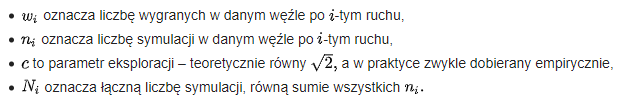
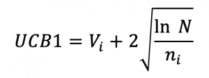
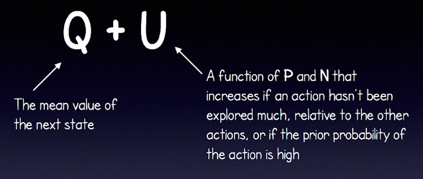
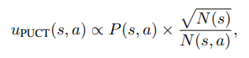
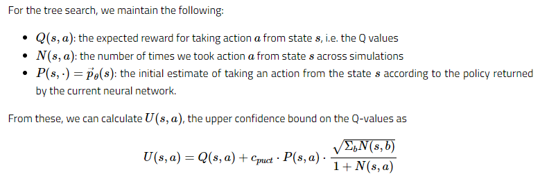

Monte Carlo + Neural Networks
Selection
Monte-Carlo Tree Search (https://pl.wikipedia.org/wiki/Monte-Carlo_Tree_Search)

Introduction to Monte Carlo Tree Search (https://www.analyticsvidhya.com/blog/2019/01/monte-carlo-tree-search-introduction-algorithm-deepmind-alphago/)

AlphaGo Zero Tutorial Part 2 (https://www.youtube.com/watch?v=NjeYgIbPMmg)


Multiple Policy Value Monte Carlo Tree Search (https://www.ijcai.org/proceedings/2019/0653.pdf)

A Simple Alpha(Go) Zero Tutorial (https://web.stanford.edu/~surag/posts/alphazero.html)
